UDN
Search public documentation:
MaterialEditorUserGuideCH
English Translation
日本語訳
한국어
Interested in the Unreal Engine?
Visit the Unreal Technology site.
Looking for jobs and company info?
Check out the Epic games site.
Questions about support via UDN?
Contact the UDN Staff
日本語訳
한국어
Interested in the Unreal Engine?
Visit the Unreal Technology site.
Looking for jobs and company info?
Check out the Epic games site.
Questions about support via UDN?
Contact the UDN Staff
材质编辑器用户指南
概述
打开材质编辑器
材质编辑器界面
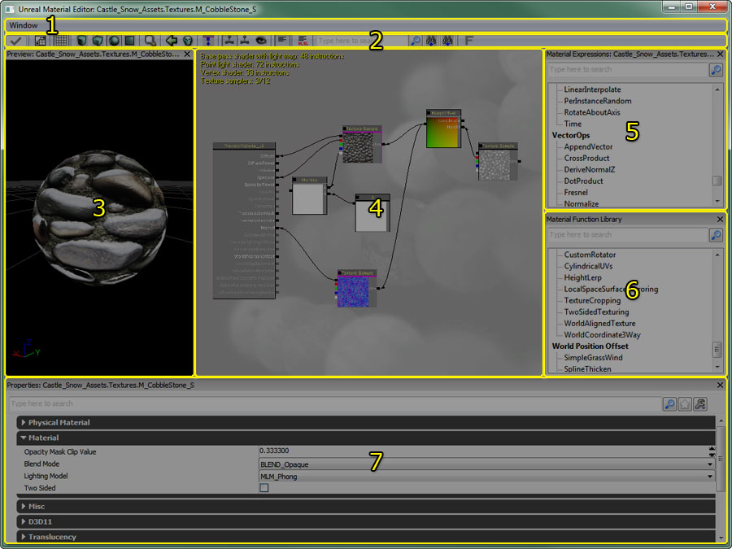
- 菜单条
- 工具条
- Preview Pane - 可以预览网格物体上的材质。
- 材质表达式图表 - 在这个面板中将材质表达式节点连接在一起，创建着色器指令。
- 材质表达式列表 - 一个可用材质表达式的列表。
- 材质函数库 - 可供使用的材质函数的列表。
- Properties Pane - 材质的属性或选择的材质表达式节点。
菜单条
窗口
- Properties(属性): - 显示属性面板。
- Preview（预览） - 显示预览面板。
- Material Expressions（材质表达式） - 显示材质表达式图表。
工具条
| 图标 | 描述 |
|---|---|
| 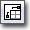 | 移动材质表达式，使基础材质节点出现在主要面板的左上角。 |
 | 切换在材质预览面板中的背景网格。 |
  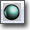  | 选择标准的形状用于预览您的材质。 |
 | 打开内容浏览器并选择这个材质。 |
| 在内容浏览器中选中一个静态网格物体，并按下这个按钮来使选中的网格物体作为预览网格物体。 | |
| 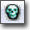 | 删除任何没有连接到材质的材质表达式节点。 |
 | 显示/隐藏没有连接到任何东西的材质表达式连接器。 |
 | 如果启用此项，则实时地在预览网格物体上更新材质。为了更好的编辑器性能请禁用此标志。 |
 | 如果启用此项，则实时地在每个材质表达式节点更新材质。为了更好的编辑器性能请禁用此标志。 |
| 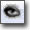 | 这个按钮是材质表达式的bRealtimePreview(是否实时预览)标志的全局切换控制处。如果启用此项，当每次添加、删除、连接、取消链接或者改变材质属性的值时将重新编译所有的子表达式的着色器。为了更好的编辑器性能请禁用此标志。请参阅表达式预览部分。 |
| 应用在材质编辑器中对初始材质所进行的任何更改以及在世界中使用的任何材质。 | |
| 显示/隐藏表达式图表面板中的材质统计数据。 | |
| 为当前选择的表达式开启 HLSL 源显示。 | |
| 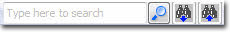 | 允许您为出现的一段文本搜索表达式。 请参阅材质表达式搜索了解更多信息。 |
预览面板
 材质预览面板显示了正在编辑的并被应用到一个网格物体上的材质。通过拖拽鼠标左键来旋转网格物体。通过拖拽鼠标的中间键来平移网格物体；通过拖拽鼠标右键来缩放网格物体。通过按下 L 并拖拽鼠标左键来旋转光源的方向。
用于预览的网格物体可以通过使用相应的工具条控制按钮来改变（形状按钮、“选择预览网格物体”、及“使用选中的及静态网格物体”按钮）。用于预览的网格物体和材质一同被保存，以便下次您在材质编辑器中打开材质时，材质会在同样的网格物体上进行预览。
材质预览面板显示了正在编辑的并被应用到一个网格物体上的材质。通过拖拽鼠标左键来旋转网格物体。通过拖拽鼠标的中间键来平移网格物体；通过拖拽鼠标右键来缩放网格物体。通过按下 L 并拖拽鼠标左键来旋转光源的方向。
用于预览的网格物体可以通过使用相应的工具条控制按钮来改变（形状按钮、“选择预览网格物体”、及“使用选中的及静态网格物体”按钮）。用于预览的网格物体和材质一同被保存，以便下次您在材质编辑器中打开材质时，材质会在同样的网格物体上进行预览。
属性面板
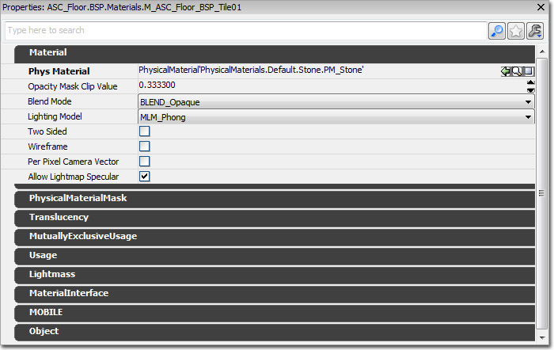
这个面板包含了一个选中的材质表达式的属性窗口。如果没有选中表达式，正在编辑的材质属性将显示在该面板上。 请参阅材质概述了解所有材质属性的描述。材质表达式面板
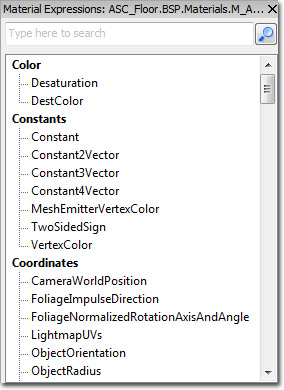
这个面板包含着一系列的材质表达式，它们通过"拖拽并落下"的操作被放置在材质中。要想放置一个新的材质表达式节点，左击要放置的材质表达式类型，并拖拽鼠标到图表面板，然后释放。材质函数库
 这个面板包含着可以通过“拖拽”放置在材质中的材质函数。要想放置一个新的材质函数，左击要放置的函数类型，并拖拽鼠标到图表面板，然后释放。 会放置一个新的 MaterialFunctionCall 节点，赋值给它相应的材质函数。
这个面板包含着可以通过“拖拽”放置在材质中的材质函数。要想放置一个新的材质函数，左击要放置的函数类型，并拖拽鼠标到图表面板，然后释放。 会放置一个新的 MaterialFunctionCall 节点，赋值给它相应的材质函数。
材质表达式图表面板
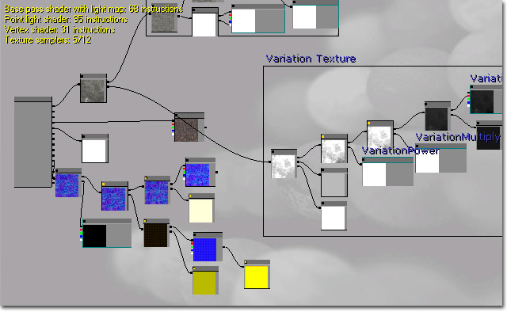
这个面板包含了一个属于这个材质的所有的材质表达式的图表。在这个材质中使用的着色器指令的数量以及所有编译器错误都会显示在左上角。指令的数量越少，材质的消耗越小。没有连接到基础材质表达式节点的材质表达式节点不被算入到这个材质的指令数量(消耗)中。 默认情况下，材质包含一个单独的材质节点。 该材质节点具有一系列输入，每个输入与材质的不同部分相关联，其他表达式或表达式网络可以连接到这些输入。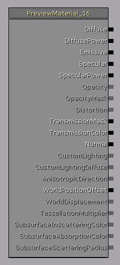
请参阅材质概述了解有关该材质节点的各种输入的描述。控制
材质编辑器中的控制基本和 UnrealEd 中的其它工具的控制相匹配。比如，材质表达式图表可以像其他包含相互连接的对象的编辑器那样进行导航，材质预览网格物体可以像其它的网格物体工具那样改变其方向等等。鼠标控制
| 控件 | 操作 |
|---|---|
| 在背景上点击 左鼠标按钮或右鼠标按钮 + 拖拽 | 平移材质表达式图表 |
| 鼠标滚轮 | 缩放控制 |
| LMB + RMB + 拖拽 | 缩放 |
| 鼠标左键按钮点击一个对象 | 选中 表达式/注释 |
| 按下 Ctrl + 鼠标左键按钮点击一个对象 | 切换表达式/注释的选择情况 |
| Ctrl + LMB + 拖拽 | 移动当前选择/注释 |
| Ctrl+Alt+鼠标左击+拖拽 | 框选 |
| Ctrl+Alt +Shift + 拖拽 | 框选（添加到当前选项） |
| 点击并拖拽连接器 | 创建连接(在连接器或变量上释放鼠标)。 |
| 鼠标左键按钮 + 拖拽连接 | 移动连接（在同一种类型的连接器或变量上释放） |
| Shift + 鼠标左键按钮点击连接器 | 标记这个连接器。 标记连接器后再次执行这个操作将会在两个连接器之间创建连接。 这是远距离建立连接的快捷方法。 |
| 右击背景 | 弹出 New Expression（新建表达式）菜单 |
| 右击对象 | 弹出 Object（对象）菜单 |
| 右击连接器 | 弹出 Object（对象）菜单 |
| Alt + 左击连接器 | 断开到那个连接器的所有连接 |
| 按下 L + 拖拽鼠标（在预览面板） | 旋转预览光源的方向 |
键盘控制
| 控件 | 操作 |
|---|---|
| Ctrl + C | 复制选中的表达式 |
| Ctrl + V | 粘帖 |
| Ctrl+W | 克隆选中对象 |
| Ctrl+Y | 重复 |
| Ctrl+Z | 取消 |
| Delete（删除） | 删除选中对象 |
| Spacebar（空格键） | 强制更新所有材质表达式的预览 |
| Enter(回车) | (和点击’应用’按钮的作用一样) |
热键
有一些热键用于放置经常使用的材质表达式。按住热键，然后左击放置节点。热键如下所示：| 热键 | 表达式 |
|---|---|
| A | Add(加法) |
| B | BumpOffset(凸凹偏移) |
| C | ComponentMask（组合蒙板） |
| D | Divide(除法) |
| E | Power（乘数幂） |
| F | MaterialFunctionCall（材质函数调用） |
| I | If (条件表达式) |
| L | LinearInterpolate(线性插值) |
| M | Multiply (乘法) |
| N | Normalize (单位化) |
| O | OneMinus（减 1） |
| P | Panner（平移器） |
| R | ReflectionVector（反射向量） |
| S | ScalarParameter（标量参数） |
| T | TextureSample（贴图采样） |
| U | TexCoord（贴图坐标） |
| V | VectorParameter（向量参数） |
| 1 | Constant（常量） |
| 2 | Constant2Vector（二维常数向量） |
| 3 | Constant3Vector（三维常数向量） |
| 4 | Constant4Vector（四维常数向量） |
| Shift + C | Comment（注释） |
表达式注释
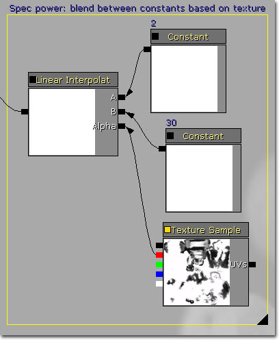
材质表达式节点可以分别地进行注释，通过在那个节点的"Desc(描述)"属性中输入文本即可。 通过选中几个节点并点击‘Shift + C’键来为一组节点来分配组注释。在"New Comment(新建注释)"对话框中输入注释文本并点击确定按钮。选中的节点将被分组在一个注释框中。可以通过在组注释文本上进行拖拽来移动在组注释中的节点。通过拖拽在注释框架右下角的黑色三角形可以重新设定框架的大小。在一个组注释中的任何节点将随着边框移动，所以您可以调整现有框架的大小来包含新的节点。 通过选择注释然后修改属性窗口中的"Text(文本)"属性可以重命名注释。表达式预览
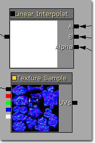
在材质编辑器中的节点的左上角有一个小方框。这个方框代表的是节点的 bRealtimePreview 属性： 黄色代表启用该选项，黑色代表禁用。 无论何时材质以任何方式改变（创建、删除、连接一个节点及改变属性等等），所有启用了bRealtimePreview（实时预览）功能的节点都会重新编译它们的着色器。这个重新编译的过程一定会发生，意味这样在那个节点处的材质预览描画才会更新。然而，重新编译这些中间的着色器是很消耗时间的，尤其是如果您的材质包含许多节点时。所以，为了避免冗长的工作流程，除了TextureSample以外的所有节点默认情况下都是禁用bRealtimePreview（实时预览）功能的。 您可以通过点击空格键来强制更新所有预览。所以，通过禁用尽可能多的节点的bRealtimePreview（实时预览功能）可以获得快速的迭代。 您可以通过点击在节点左上角的小方框或者通过使用选中节点的属性窗口来启用bRealtimePreview（实时预览）功能. 您可以使用"Toggle Expression Realtime Preview（切换表达式实���预览）"全局地控制所有节点的实时预览功能。编译器错误
 编译器错误会通过提供有关发生错误的表达式类型的信息和错误的描述让您知道有问题存在以及问题是什么。 此外，这个包含错误的节点将会在图标面板中使用红色高亮显示，这样您就可以轻松地发现它，然后进行一些必要的校正。
编译器错误会通过提供有关发生错误的表达式类型的信息和错误的描述让您知道有问题存在以及问题是什么。 此外，这个包含错误的节点将会在图标面板中使用红色高亮显示，这样您就可以轻松地发现它，然后进行一些必要的校正。
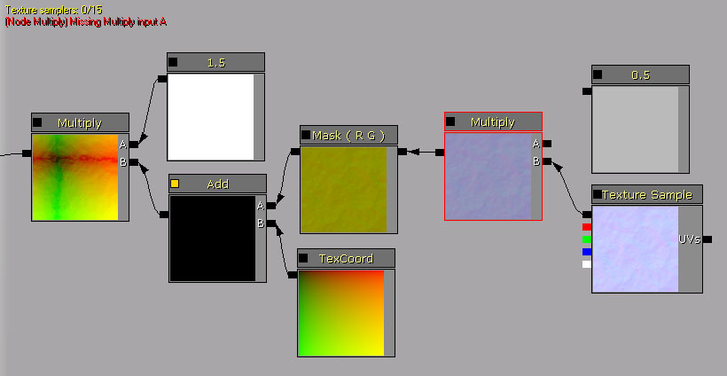
材质表达式搜索
 注意： 搜索区分大小写。
针对以下属性值进行搜索：
注意： 搜索区分大小写。
针对以下属性值进行搜索：
| 表达式类型 | 搜索的属性 |
|---|---|
| All | Desc（描述） |
| Texture Sample | Texture（贴图） |
| Parameters | ParamName（参数名称） |
| Comment | Text（文本） |
| FontSample | Font（字体） |
| MaterialFunctionCall | MaterialFunction（材质函数） |
NAME= 切换与您的搜索结合使用对制定的表达式类型执行搜索操作。 例如，要知道所有的贴图样本，您可以使用下面的搜索代码：
NAME=texture
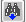
和 按钮在所有与搜索条件匹配的表达式之间循环。
按钮在所有与搜索条件匹配的表达式之间循环。
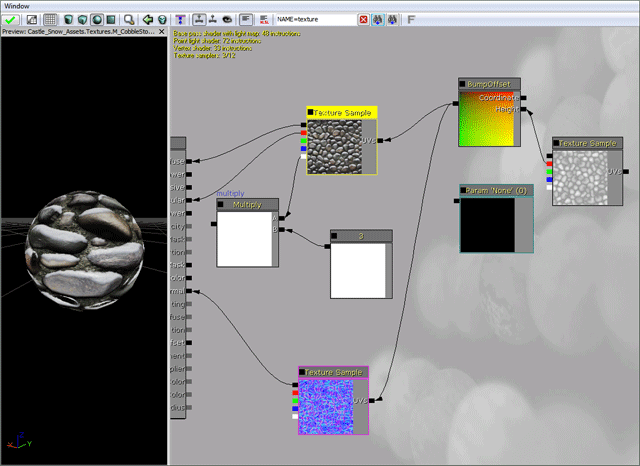
在初始情况下或通过 和 按钮选中了一个新的匹配结果时，如果它还不可见，那么会将它放入到图标面板视图中。
要清除搜索，只需按下  按钮。
按钮。